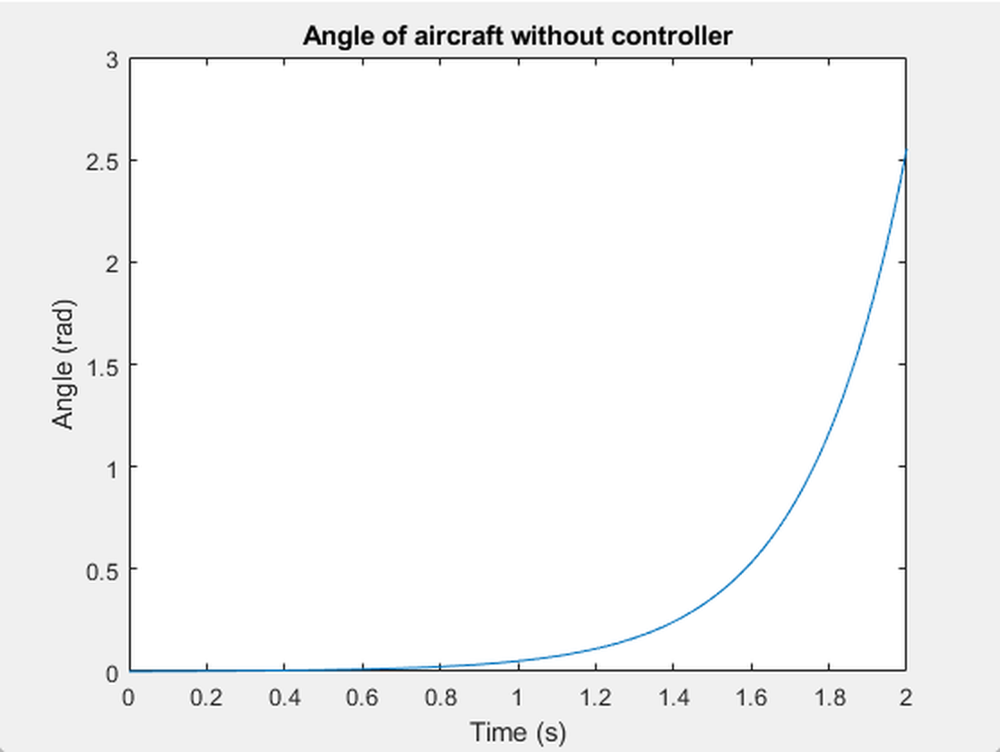
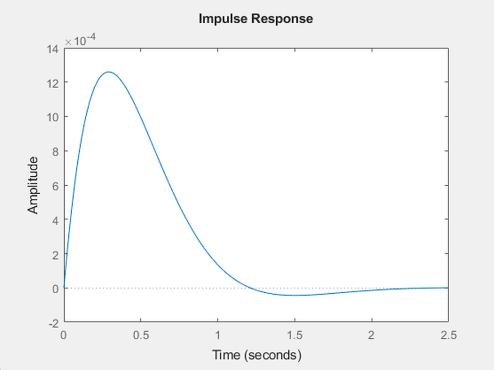
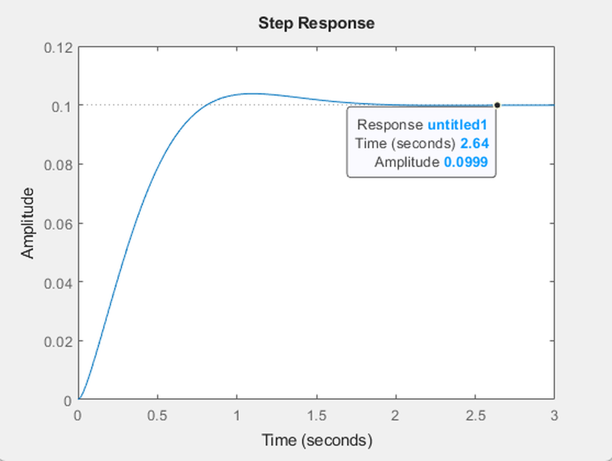
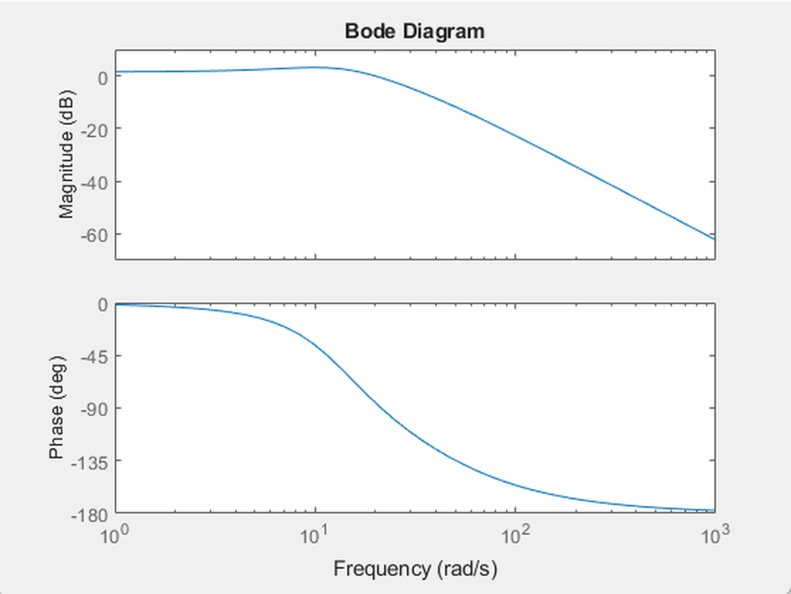
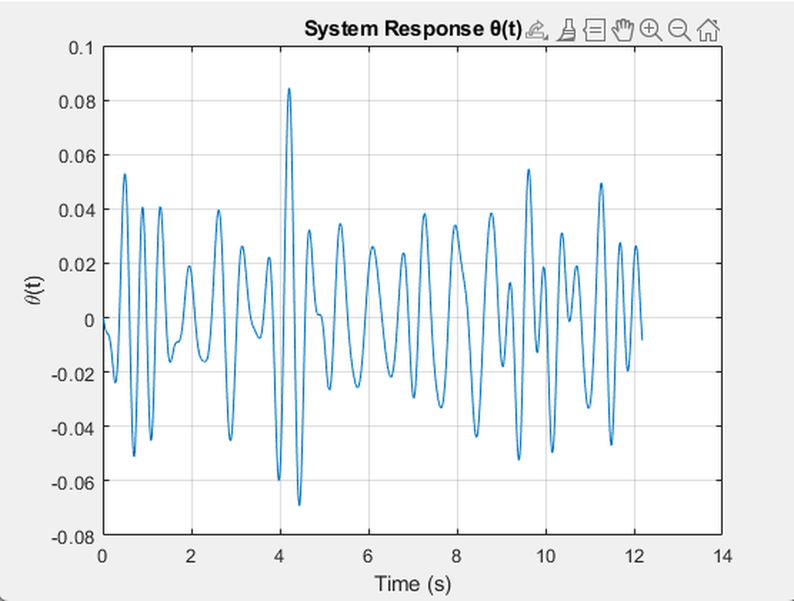
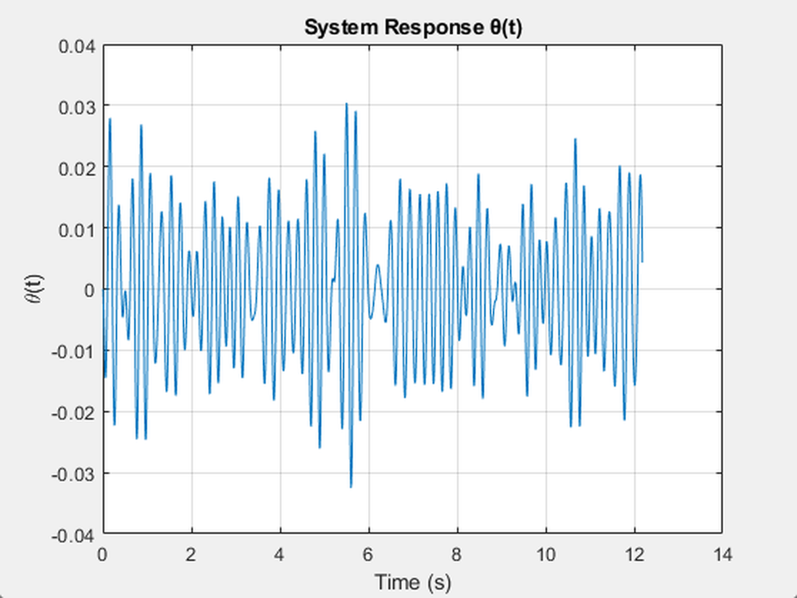

Aircraft Pitch Dynamics & Controller Analysis
On this hypothetical aircraft the center of pressure (Cp) and center of gravity (Cg) sit at different points to achieve higher performance. That offset makes the pitch dynamics θ(t) very unstable without a controller adjusting the pitch angle. The project has three parts: setting up the problem, analyzing the controlled aircraft without noise, and analyzing it with noise.
- Course
- MAE 3360, UT Arlington
- Tools
- MATLAB (tf, step, bode, lsim), Laplace transforms, residue theorem
- Key result
- Unstable → stable with controller; out-of-band noise cut pitch deviation by about 56%
Part 1: Setup and the uncontrolled aircraft
I found the eigenvalues of the original differential equation, used the Laplace transform and the residue theorem to solve for θ(t) from the given initial conditions, plotted it in MATLAB, and defined the four general equations used in the later scenarios.
The solution is θ(t) = (e3.92486t − e−6.11486t) / 1003.97. The positive exponent means the pitch angle grows without bound: it reaches roughly 2.5 rad in 2 seconds, so a gust of wind would make the aircraft unflyable almost immediately.

Part 2: Scenario 1, controller added, no noise
Taking the Laplace transform of the four equations and eliminating three unknowns gave the transfer function θ(s) of the stabilized system:
θ(s) ∝ (s + 51) / (100s³ + 5319s² + 27894s + 68850)
| Pole | Damping | Natural frequency | Time constant |
|---|---|---|---|
| −2.78 ± 2.60i | 0.73 | 3.80 rad/s | 0.36 s |
| −47.6 | 1.00 | 47.6 rad/s | 0.021 s |
- Recovery from a disturbance: settling time of 1.55 s after a wind gust, using MATLAB’s
stepinfo. - Impulse response of θ(s) plotted for a new θ(t).
- Tracking a commanded angle: the transfer function from the desired pitch angle θd to θ initially settled far from the 0.1 rad target. Its DC gain was 2.778, so I divided the numerator by that value to make the DC gain 1, and the step response then settled at 0.1 rad.


Part 3: Scenario 2, sensor noise
I used the given transfer function h(s) from noise to pitch angle and verified its bandwidth is close to 23 rad/s (MATLAB returned 22.98 rad/s). Then I modified the provided StochInput routine so the noise has a flat power spectral density (19×10−5) over a chosen frequency band, and simulated θ(t) with lsim for two cases:
| Case | Noise band | Mean of θ(t) | Std. deviation of θ(t) |
|---|---|---|---|
| 1: inside the bandwidth | 1–3 Hz | 0.00005 | 0.02572 |
| 2: outside the bandwidth | 4–6 Hz | 0.00008 | 0.01120 |
Both means are essentially zero, as expected for zero-mean noise inputs. Noise inside the bandwidth passes through and produces a pitch deviation about 2.3× larger than noise outside it (0.0257 vs 0.0112 rad, about 56% lower).



Takeaways
- A controller is essential: without one, the aircraft is unflyable within about 2 seconds of a disturbance.
- The controlled system recovers from a gust quickly, and getting the DC gain to 1 is what makes it settle at the commanded angle.
- Noise cannot be eliminated, but keeping it at frequencies outside the system bandwidth filters out much of it and keeps the aircraft more stable.